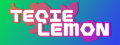
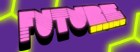

PERSONAL STUFF
MAIN PROJECTS
|  | TEQIELEMON | I've dreamt of making content since I was 9 but I could never find what was it that I actually wanted to do. With the rebrand I've realised what I want to make and will proceed to make the best content I can. |
| K2+ | Making music has been a dream of mine for a while now and while I may not be that good at it yet, it is something I genuinely want to dedicate more time into making it as I think of it as a perfect medium to share my emotions. [EXTERNAL SITE] | |
| ART COMMISSIONS | Commissions are a way for me to earn a bit more money doing what I love. If you want to to support me, commissioning a drawing will be a much better investment than just donating to me. | |
|
|
SPLASHHEX STUDIO | I've been writing ideas for games for a long time and I even started working on a couple of those projects. I may not be good at making them but it's a passion of mine and I love seeing people enjoy what I produce. |
SECONDARY PROJECTS
| PIXEL ARCADE CARDS | I always loved collecting stuff, be it cards, stickers or pins but a lot of this stuff costs real money and to collect an entire set you may have to sped a lot more that you wish. These are fully virtual cards tied exclusively to a private bot on my Discord server. Jump in and explore what cards you might be able to get. | |
|  | FUTURESPRINT | I love being able to wear stuff that describes and matches me. FutureSprint became a thing as a way for me to express myself by wearing my own designs. Feel free to browse through the stuff and maybe you'll find something you like too. [EXTERNAL SITE] |
| ░░░░░░░░░ ░ ▒▒▒▒ ▒▒▒▒▒▒▒ ▒▒ ▒▒▒▒▒ ▒▒▒▒▒▒▒▒▒▒▒▒ ▒▒▒▒▒ ▒▒▒▒▒▒▒ ▒▒▒▒▒▒ ▒▒▒▒▒ ▒▒▒▒▒ ▒▒ ▒▒ ▒ ▒▒▒▒▒ ▒▒▒▒▒ ░░░░░░░░░░░ ░░░░░ |
THE LAB (OTHER PROJECTS)